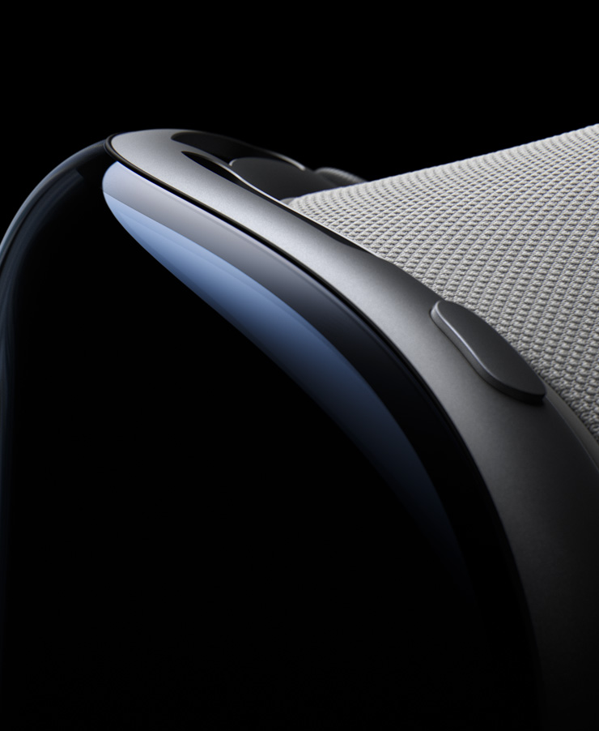

Available Starting 2.2
watch the guided tour >
welocome to era of
spatial computing.
Apple Vision Pro seamlessly blends
digital content with your physical space.
You navigate simply by using your
eyes, hands, and voice.
So you can do the things you love
in ways never before possible.
Watch the film
Watch the Guided Tour >
Design
designed by apple.
Apple Vision Pro is the result of decades of experience designing
high‑performance, mobile, and wearable devices — culminating in
the most ambitious product Apple has ever created. Apple Vision Pro
integrates incredibly advanced technology into an elegant, compact
form, resulting in an amazing experience every time you put it on.
Front. A singular piece of three-dimensionally formed laminated glass flows into an aluminum alloy frame that curves to wrap around your face.
Light Seal. The Light Seal gently flexes to conform to your face, delivering a precise fit while blocking out stray light.
Head bands. The Solo Knit Band provides cushioning, breathability, and stretch, and a Fit Dial lets you adjust Apple Vision Pro precisely to your head. The Dual Loop Band offers an additional option for a personalized fit.
Power. The external battery supports up to 2 hours of general use and up to 2.5 hours of video playback.
Sound. Speakers positioned close to your ears deliver rich Spatial Audio while keeping you aware of your surroundings.

